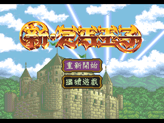
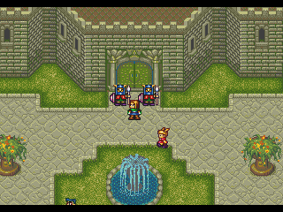
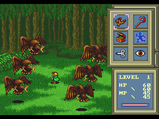

名稱：蒼龍少年 (Young Gatt，中文版) 簡介：遊戲龍科技2003年出品的角色扮演遊戲，以3D畫面呈現，團隊回合制方式戰鬥 [待補]。


保護：光碟，破解碼（放入光碟才有背景音樂）： prpg.exe 1D 0F 85 0F 00 00 00 -- 90 90 90 90 90 90 00 0F 84 2D 00 00 00 6A 01 -- E9 2E 00 -- -- -- -- -- 或 57 0F BF 45 08 83 F8 75 0F 85 29 -- -- -- -- -- -- -- -- 90 E9 -- 1D 0F 85 0F 00 00 00 -- 90 E9 00 -- -- -- 20 44 00 0F 84 07 -- -- -- 90 E9 -- 備註：VirtualBox請搭配DxWnd（不可全螢幕），或改用VMware（畫面較小）、Win64+dgVoodoo2。 操作： Space = 確認／動作（交談、開箱等） Enter = 取消／遊戲功能欄 Esc = 離開遊戲 說明：必須在有時光印記的地方才能存檔。